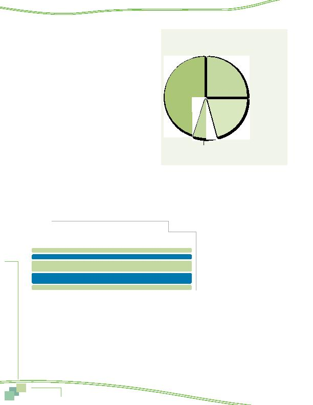

|

on e Comm responsibilities would allow them to work at a location other than their main work place, at least occasionally. Approximately 40% said it would be possible. These respondents were then asked if they would want to telecommute. Seven in ten said they would be interested in telecommuting on either an occasional basis (42%) or a regular basis (27%). These interested respon- dents equal about 28% of non-telecommuters and 21% of all commuters. summarizes the telecommute status of all respondents who are "commuters," that is, not self-employed/work at home full-time. mute, that is, they have job responsibilities that could be done away from the main work place and they would be interested in telecommuting, if given an opportunity. These commuters represent about 500,000 potential telecommuters. The remaining respondents said they would not be interested in telecommuting (9%) or that their job responsibilities could only be performed at the main workplace (45%). ages measured in 2007 and in 2004. As shown in the table, the percentage of current plus potential telecommuting has grown could telecommute but are not interested has remained relatively constant. in 2004 to 45% in 2010. Because it seems unlikely that the composition of jobs changed substantially in the region, these results suggest a shift in commuters' ability, or perception of their ability, to perform their work at home or another location away from their primary work location. It appears that a larger share of commuters believe they could telecommute, at least communication and computer technology, such as broadband internet, lower cost telephone options, and computer network- ing, or perhaps from greater understanding of telecommuting options and a broader definition of what responsibilities are "telecommute-compatible." Table 21 compares the incidence of telecommuting by respondents' sex, ethnic group, age, income, commute distance, and home and work areas. The third column shows the percent- age of each demographic group who telecommutes today (e.g., 26% of men and 24% of women telecommute now). The last column shows the percentage of non-tele- commuters in the group who "could non-telecommuting women would telecommute). Note that this should be compared against the 28% of all non-telecommuters in the region who "could and would" telecommute. muted than did either African-Americans (18%) or Hispanics (18%). Telecommuting appeared to increase with age up to the 35-54 years old group, peaking at 27%, and then declining as age increased further. And telecommuting increased as income increased; 26% of workers with household incomes between |